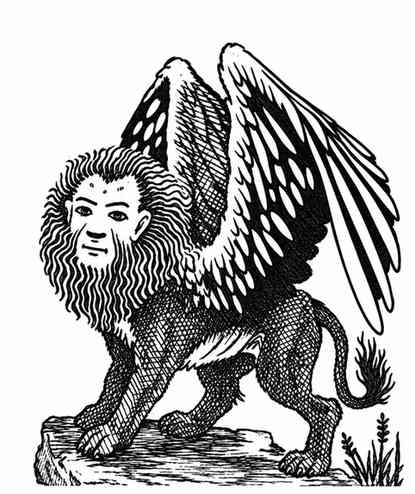

拉玛苏 · Lammasu
 |
|
拉玛苏栖居在温暖地区，但偶尔也会造访各种气候之地。它们天性善良友好，乐于帮助并保护守序善良者，也会善待所有善良生物。
拉玛苏可随意隐形，并可随意使用次元门。它们持续散发半径 10 尺的防护邪恶灵光，效果加倍：邪恶生物攻击它们时 −2，抵抗邪恶攻击的豁免检定 +2。它们还能施展最高四环的牧师法术，施法能力视为 6 级：每日可施展一环 4 个、二环 3 个、三环 2 个、四环 1 个。其治疗伤口类法术效果加倍（分别恢复 4–14 点与 8–28 点生命值）。另有 10% 的拉玛苏能够施展神圣言语。
拉玛苏以自己的语言、守序善良语，以及有限的心灵感应进行交流。